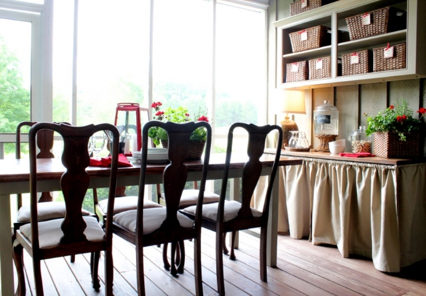
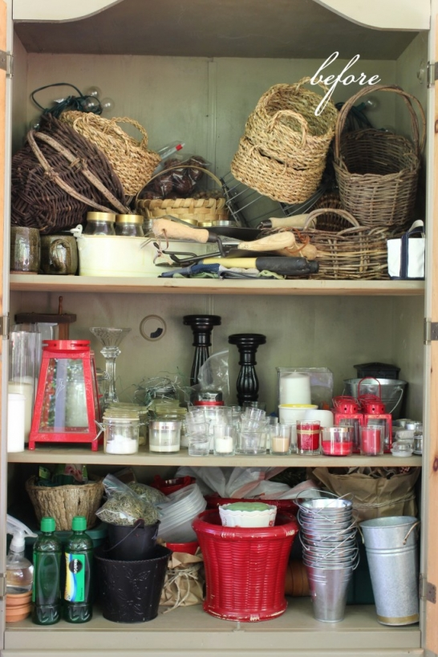
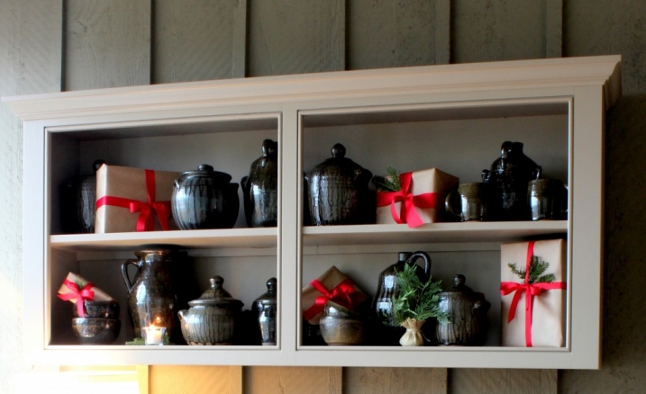

.png)
.PNG)
.PNG)
.PNG)
.PNG)
.PNG)
.JPG)
.JPG)
.PNG)
.PNG)



It is a lazy rainy Sunday here. Hope you have had a relaxing weekend. In my post about blackberry cobbler I promised you I would show you some of the organization that has been going on out on the porch. It seems like during the school year, we just keep the house “tolerable.” When summer finally arrives I use the time to organize closets and cabinets. This year I started with the big cabinet on the porch. It was bad. See for yourself….

There was a little method to my madness out there…baskets on the top shelf, candles and lanterns on the second, and anything related to plants on the bottom (except the tools somehow gravitated to the top shelf for some reason.) I knew there had to be a better way to store all of it on the porch. The only other place out there for storage was the shelves over the table – the shelves that had the pottery displayed in it. Here is how it looked in a photo from Christmas:

It looked nice, but I needed it to be used more efficiently. And the dark colors looked more like fall than summer to me. I decided that storing the smaller things in baskets on the shelves would work better than all piled up in the cabinet. A shopping trip to Target provided the assortment of baskets needed for the job.
The weave on these matched the weave on some of the furniture pieces on the porch. At first I thought I didn’t need the liners, but after putting the items in the basket, I tied the liners to close them around the assorted things instead of having them hang over the outside of each basket… like a little pouch inside the basket. This will help protect them from dust. All of the small things got sorted and put into a variety of baskets.

Here is a little closer look at them.

Two of the larger baskets ended up on top of the big cabinet, too.

To make the tags: 1. I simply glued my favorite Christmas paper to kraft paper cardstock, and then cut it into squares. (That was to give it more weight.) 2. Then I cut out smaller squares from more of that cardstock, labeled them with the names of the items using a calligraphy pen, and glued them in the center of the wrapping paper squares. 3. Then I used a hole punch to punch a hole near the top and put adhesive hole reinforcers on the front and the back. And finally 4. I tied them on the baskets with pieces of red grosgrain ribbon. A super easy do-it-yourself (and now I can find what I am looking for!! Hallelujah.)

If you have been over to Savvy Southern Style you have seen the shelves all finished.

Believe or not, the cabinet is still full. The big baskets had to stay (silly to put baskets in a basket. 🙂 ) I moved all the pottery to the lower shelf, and I was actually able to pull some of the things out of the kitchen island to store on the porch. Hooray – more storage space in the kitchen!

Much much better now. 🙂
Okay, that’s all of the porch organization for now. The other day I also promised you the recipe for our homemade vanilla ice cream.

This recipe is for use in a 4-quart ice cream churn. If yours is a different size, you will obviously need to adjust the measurements. I will tell you that the eggs are raw in the recipe. We have never had any problems with them, but you could use an egg substitute if you prefer. I have tried recipes where the eggs are cooked into a custard, but the results taste like store bought ice cream to me. 
And because you all are such wonderful readers, I am going to also share a recipe with you for homemade butter pecan ice cream that is delicious!. The vanilla ice cream recipe above is one my husband has been making for over 25 years. The butter pecan recipe came from the mother of one of his friends. I have loved this ice cream since I was a teenager (and I am not normally a fan of butter pecan ice cream.) I hope you will enjoy it, too.

Perhaps you will have an opportunity to use one of the recipes now that summer is upon us.

I hope your week is full of fun surprises (and maybe some ice cream, too!) I will be working at the school a day or two to try to finish getting my new classroom organized for next year’s new job. After that I have a giveaway planned for you! 🙂 We haven’t done one of those in awhile, so please be sure to visit here again this week for that. Today I will leave you with an easy question to talk about:
What is your favorite flavor of ice cream? (Easy, right?)
Can’t wait to hear from you!


.PNG)
Kelly…love your porch and you have mastered organizing it so beautifully!
Great job! I’m a teacher too and feel the same way! I’ve loved having these couple of weeks to purge and organize at home….and throw in a little impromptu Destin trip as well! I am having a birthday next month and I just told my hubby I wanted an ice cream maker! I hope I get one. My favorite to make is orange. It reminds me of my sweet grandparents making vanilla and then adding Sunkist to the recipe. Yum!
Kelly,
Your post inspired me to clean off my patio this morning. I’ve been out of school TWO WEEKS and still have yet to complete any home projects! I can totally relate with you for wanting to teach something new next year. Education has certainly changed over the past 24 years–or maybe I have. 😉 Thanks for the needed motivation!
———————————————————————–
Yay! I am glad you found inspiration here. I think..no, I KNOW.. education is the thing that has changed. The expectations for what a teacher is supposed to be able to do are so unrealistic now. It is not humanly nor mathematically possible to do all that is demanded, and I am a very hard worker. I remember thinking my first year, “And you mean I actually get paid to do all this fun stuff?”ha ha. I could really write an entire dissertation about the changes, but blogging is supposed to be my creative outlet AWAY from teaching. 🙂 So I’ll just think about ice cream instead! LOL Glad you had a productive morning with your patio.
Kelly
I love homemade butter pecan ice cream. My husband cooks the pecans, and sweeten condensed milk together in a pan and makes a praline mixture before adding it to the rest of the mix. yum
——————————————————————–
Your recipe sounds DIVINE! Oh my gosh…a praline ice cream – much better than just butter pecan!
Kelly
Impressive! (but so like you, always perfection!)
I appreciate the ice cream recipes and hope to try them.
————————————————————————
What’s impressive is that I could actually make some room in the cabinet in the KITCHEN by making room out on the porch for more “stuff”! Everything is such a domino effect, isn’t it? The kitchen is quite happy about it!
Kelly
As always, your pictures are beautiful and your projects inspiring. Every year, we receive an Amazon gift card and I never know what to purchase. I am on my way to the site to look at Ice Cream Makers. Thank you!!
———————————————————————
Thank you for your kind words! What a smart thing to do with your Amazon gift card! I hope you find an ice cream maker you like (and then I hope you use the recipes to make some yummy desserts.) Enjoy!
Kelly
I can’t wait to try the ice cream and cobbler recipes this weekend. They’ll be perfect for Father’s Day. Thank you for sharing.
———————————————————————
I agree! That ice cream and cobbler would be perfect desserts for Father’s Day.
Kelly
Kelly, I do the same thing at the beginning of every summer…organize! It makes the summer much more pleasant. Just put my newlywed daughter and son-in-law in the road to Orlando for his pediatric residency, our son is in the Maine wilderness on the Appalachian Trail … This house might stay organized this time, sadly. Favorite ice cream is/has been Jamoca Almond Fudge from B&R. Haven’t had it in years.
————————————————————————
You made it through the wedding! Hooray! It will be much quieter around your house for sure. My middle child had planned on doing the AT (starting on the Georgia end) this summer but changed his mind after his adventure on the Lost Coast of California. Now he is actually talking about going out to California again. Jamoca Almond Fudge sounds good and chocolate-y. Yum!
Kelly
Thanks for the ice cream recipes. I actually prefer “ice milk” like your recipes. I can’t wait to try yours out. My favorite flavor is Macapuno, soft young coconut from Tucker’s in Alameda CA.
———————————————————————–
Glad you liked the recipes! Your favorite flavor sounds very interesting. I have never had coconut ice cream…hmmm…may have to look for something like that at our ice cream shops around here or perhaps when we go to Florida.
Kelly
Love the basket organization. Looks wonderful!
Oh that homemade ice cream. Yum yum! Favorite flavor would be butter pecan, but have never made it homemade. Need to try your recipe. I always love getting butter pecan at the county fair.
———————————————————————-
Thanks for the compliments on the porch organization! If you love butter pecan, then you will adore this recipe. It is REALLY yummy! If you get a chance to make it, I would love to know what you think of it.
Kelly
My favorite ice cream flavor is strawberry. I can’t wait to make the homemade versions you have here. I think butterpecan is my Father-in-laws favorite. Thanks for sharing it with us!
————————————————————————-
My father-in-law loves that butter pecan one! He also loves a black walnut ice cream…which I have never had. I hope you will get to try out the recipes this summer.
Kelly
Oh that homemade ice cream looks delicious…and the butter pecan sounds perfect! Too bad I am dieting!!
Have a lovely day!!
———————————————————————
Dieting is not fun. Our oldest is on a diet, and it sure makes it challenging to prepare food that everyone can eat. Hopefully, there are some recipes for ice milk out there that would work for you. My son ate some of the cobbler but none of the ice cream. I know that sweetened condensed milk is not on anyone’s diet…but goodness I love that stuff! I could eat it out of the can with a spoon. I’ll keep an eye out for a good ice cream recipe for dieting.
Kelly
Kelly,
I do love a good organization post! It always motivates me to organized some cupboard or drawer in my own home. You did a great job and I love the organizing baskets with the great looking tags.
We bought one of the electric ice cream machines by Cuisinart so I’m ready to try the vanilla. I know I must sound boring but a truly rich, laced with vanilla bean Vanilla ice cream is my favorite flavor with Swenson’s Swiss Orange Chip ice cream as a close second…I can’t find that ice cream anymore, anyone know of where I can get some?
Karen
—————————————————————————-
Glad that I could give you a little motivation! I need to get my own self more motivated to tackle another area around here. Vanilla is not boring..it is totally versatile! I have never heard of Swenson’s ice cream but will have to look into that. The Swiss Orange Chip sounds very interesting!
Kelly
Strawberry! But, I am going to try this butter pecan recipe.
Thanks for sharing!
—————————————————————–
One of my sons loves strawberry too, but we have never made it. He has to go to our local peach packing house that makes it to get it…go figure!
Kelly
After cleaning up from the graduation party and all the mess the FL summer weather pattern brought, your posting was like a breath of fresh air! Loved seeing the big make- over in your cabinet– I now have 2 wicker baskets under my kitchen sink which helps hubby get the cleaning items back in the right spot! Your post about baskets has had me on the “prowl” and I found mine at Target also. My favorite ice cream is vanilla and I like fresh GA peaches in there when in season. I just bought a new ice cream maker last season at 1/2 price– looks like an ice cream cone! I will be making your recipes for the 4th! You now have me inspired to get to organizing my closets! Gee, thanks!;) hope you soon get your school work finished so that you can get that off your mind and get to enjoying the summer break!
———————————————————————–
I know your party must have been a ton of work – before AND after, but I bet everyone enjoyed it. Good idea to put the baskets to use with cleaning supplies…I might copy that idea! Some of the Georgia peaches should be ready for your ice cream now. Your maker sounds cool! You know, you don’t have to wait until the 4th to enjoy it…just saying. Get your closets organized and then reward yourself with some homemade ice cream. 🙂
Kelly
I can’t wait to try your icecream recipes! I’ve been using the same one for years and really wanted to try something new! Oh- your blog no longer crashes my iPad! Thanks so much for caring! I am so excited its summer because I figured you’d have more time to blog! Yours is one of my most favorites!
———————————————————————
Glad you can use the recipes, and even more glad that the site isn’t crashing for you anymore! I should have more time for blogging, but I am dying to get lots done in the yard right now. Of course with the temps crawling up to almost 100 that desire for yard work probably won’t last long. 🙂
Kelly
I love the pictures of your porch. We just moved fulltime into our lake house and I have put my pine table on the porch. I am hoping it will be okay out there. It won’t get any direct rain, but I worry about temperature changes. I have copied your ice cream recipes and will be trying those this summer. Have a good vacation- they are never long enough!
——————————————————————–
How wonderful to be living in a lake house. I am jealous!! I bet your table will be fine out there. I’m so glad you can use the recipes. (Ice cream at a lake house…now I’m even more jealous!) You are so right about vacations being too short, but I am very thankful to have this time to get “caught up” around here.
Kelly
Yummy…..Now I need to get our ice cream maker out…AND a trip to Target will be in the works to get some new baskets. I love baskets 🙂
————————————————————–
Oh no…I have triggered the basket addiction. Sorry! Ha ha. Do get that ice cream maker out and make some. (And eat some for me too..ours is gone.)
Kelly
I am going to try that vanilla ice cream recipe Kelly. I use one that is similar! I really need to organize my craft area. With the grands crafting with me, things have gotten messy. It is so nice to see an area go from chaos to order!!
———————————————————————
I know you will like that ice cream. The baskets worked out perfect for that space, and they would be good for a crafts area too. It is so nice to have things organized where you can find them when you need them. I know how having kids use things leads to messes! (But that cabinet mess can’t be blamed on anyone but me here.)
Kelly
Thank you for the recipes! They sound delicious.
Thank you too for showing the before picture! I can relate to that one! 😉
The organization tips are much appreciated, and I will keep them in mind when I work on my room over the garage. Both sons have moved out on their own and we are making guest rooms and a craft/office room.
Have a good week finishing up school and enjoy your much deserved vacation.
———————————————————————-
I hope you will make one of the ice creams. They really are good. You know I wasn’t real thrilled with showing you all the mess, but it was needed to understand why the organization happened. There are much worse disaster zones around here waiting on some form of intervention! Good luck with your room over the garage. There has been some progress in our room like that here, too. Yay!
Kelly
Hi Kelly
Your porch is lovely (as is the rest of your home) I just want to rush out and paint everything on mine now to brighten it up,
especially now that we are into a really cold wet winter here in Cape Town.
I am really looking forward to what all you have planned for the Summer.
————————————————————————–
It seems so strange to think of you in Cape Town with the wintry weather! (When our heat will soon be in the 90′s.) I am glad you liked the porch. Wish you could escape that cold wet weather, and come enjoy some warmth here in the U.S. 🙂
Kelly
Hi Kelly, Thank you for the cobbler recipe. Your porch is such a great place. My favorite ice cream … I think it’s vanilla since I love it on warm cobbler. Thanks for your lovely blog.
———————————————————————-
You are quite welcome for the recipe. Thank you for your kind words about the porch. Oh yes, vanilla ice cream is so good on many desserts..especially warm ones like cobbler. (And chocolate ones like brownies!)
Kelly
Kelly, you make me want to start organizing things .the baskets look great. It gives you such a good feeling after you finish a task like that. I love butter pecan ice cream . Thanks for the great recipes. Yarlette
———————————————————————-
You are so right about feeling good when you accomplish some organization! That butter pecan recipe is really really good. If you are fan of that flavor, you will especially love it. I hope you get to make it soon!
Kelly
No, that is not an easy question! I like homemade peach, vanilla dipped in chocolate cones,and chocolate brownie ice cream…to name a few. You might just be jealous of my ice cream freezer. You can see it at the numbersandnails.com (blog) under Thrift Christmas. Keep scrolling through the thrift store Christmas gifts until you see it and you will covet! (How often do you make homemade ice cream? We usually only make it on the Fourth of July.)
——————————————————————-
I knew it would not be easy. (That’s why I asked it. 🙂 ) I have a love for many flavors, too…coffee with Heath bits, peppermint, chocolate, Girl Scout cookie thin mint…the list goes on. I remember reading that Christmas post! I thought that was such a neat idea (and the table was beautiful.) Oh yes, your pink baby! That is truly a vintage..and I do mean vintage…ice cream churn! We make ice cream quite frequently around here from spring to early fall. My fall apple cake is especially good with the homemade vanilla. I think we might have even made ice cream once for Christmas. My dad and my middle child are THE biggest ice cream eaters I have ever seen!
Kelly
Hi Kelly. My name is Becky And I live in Ohio….
Just discovered your blog and I love everything about it.
I even went back and read some of your older posts.
You porch is just lovely. I like your style. Very tastefully done.
It’s nice that your hubby is so talented.
Thank you for the cobbler recipe. I plan to make it next week-end for my husband and son-in-law. He’ll love it. Blackberries happen to be one of his favorite foods. My husband likes them so I think it will make a great dessert to finish the meal.Since I have enjoyed all of the posts I have read so far I look forward to see what you have for us next. Happy Summer! Blessings, Becky
—————————————————————–
Thank you for reading this post and some of the old ones! I am glad that you are enjoying the blog. I hope you do get to make the blackberry cobbler…it’s easy and yummy! I appreciate your sweet comments here.
Kelly
Hi Kelly!
Love the pics. I know you said before that your porch is screened in. How do you protect all of the furniture from the weather, especially rain? We are considering screening ours in as well.
————————————————————————
Our house is L-shaped, so that part is somewhat protected, but the end by the table does get rain blown in . I use a hand rubbed wax on the 2 tabletops at that end. The seat cushions are sprayed with a Scotchguard protector. The sofa cushions get damp at the back, but they seem no worse for wear. We also have a very deep overhang that protects it a good bit too. All of it stays out there just like you see it. My biggest problem is the darn lizard that likes to run around out there! I’m afraid he is going to run in the dining room if I leave that door open. Glad you liked the pictures.
Kelly